Visi
- Menjadikan Warga Sekolah Berwawasan IPTEK dengan Mengedepankan IMTAQ
Misi
- Memotivasi Peserta didik untuk meningkatkan kualitas pembelajaran yang aktif, kreatif, efektif, kritis, dan menyenangkan.
- Menumbuhkan sikap bertanggung jawab terhadap peraturan sekolah, agama, hukum, serta norma-norma dan nilai yang berlaku di masyarakat.
- Menyiapkan peserta didik untuk menjadi pribadi yang mandiri, memiliki kreatifitas, bertanggung jawab, dan berani mengembangkan potensi diri.


 
